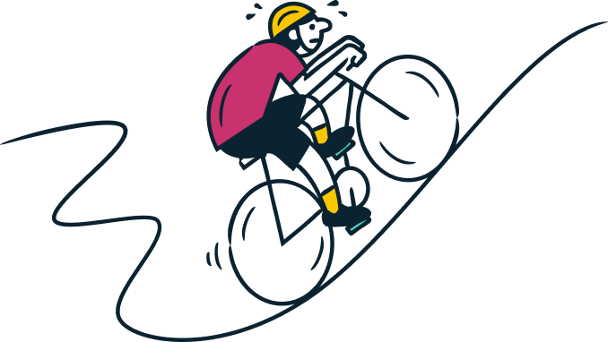
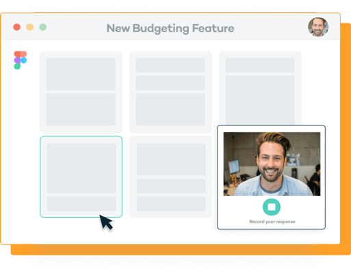

Modern product teams move fast, but learning from customers takes a ton
of time, effort, and energy.
So teams often rush user research or skip it altogether, causing products and features to miss the
mark.
Sprig makes it possible to obtain qualitative insights at the speed and
scale of analytics

Start for Free

Target your actual users during key moments throughout their
product journey.
Get 30% higher response rates by asking your customers
hyper-relevant questions based on who they are and what they'll do within your product.
Solutions
How Sprig helps ensure every product decision is customer-informed
And helps through every stage of your product.
Contextual Microsurveys
Keep a constant pulse on your customer’s experience. Continuously
surface user insights via in-product, email, or link microsurveys to improve your product and
acquisition funnels.

Video Questions
Have more customer conversations, in less time. Conduct one-to-one
user interviews anytime, anywhere in order to validate ideas and build a roadmap your customers will
love.

Concept Testing
Quickly iterate designs based on feedback from your users. Conduct
rapid and remote concept testing to ensure your new concept, design, and messaging hit the mark by
collecting feedback from your customers before launch.

Features
How Sprig delivers accurate, in-depth user insights in real-time
INTEGRATIONS
Share data and insights across all of your (other) favorite
tools by integrating with Sprig
Connect events and attributes from other platforms to
ensure you’re asking the right customers the right questions. Then share your findings with apps like
Slack and Zendesk to get a comprehensive view of your users' behaviors.

CASE STUDY
Trusted by the world's most customer-centric teams
Sprig helps product and research teams ensure user
insights fuel every product decision.
Sprig helps us collect insights easier, faster, and more
accurately than any other tool on the market, which allows us to build a better product for our users and
ultimately grow our revenue.

Daniel Layfield
Growth Product Manager at Codecademy
Launch a Sprig within minutes.
See insights within hours.
Create your free account to conduct video interviews, test designs,
and survey specific users within your product, on your website, and more.
Start for Free